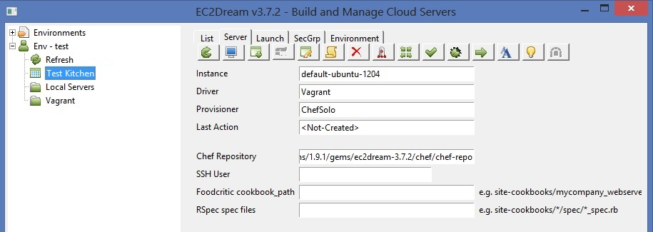
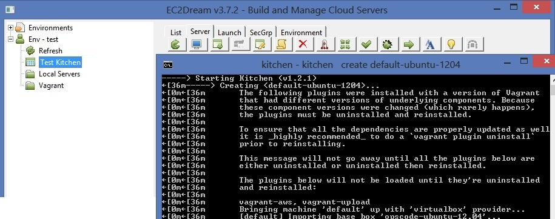
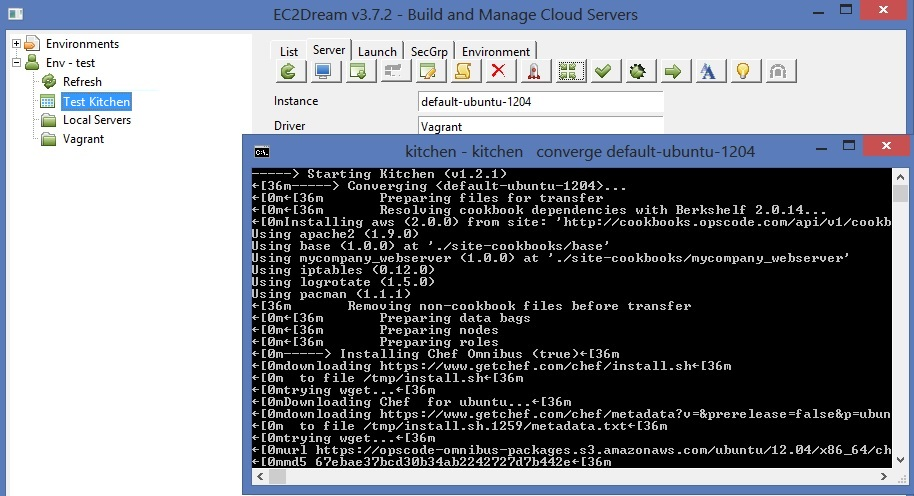
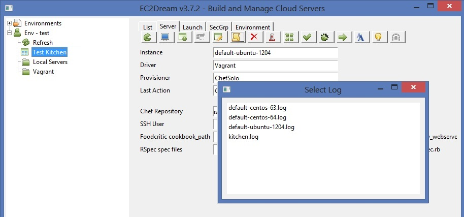
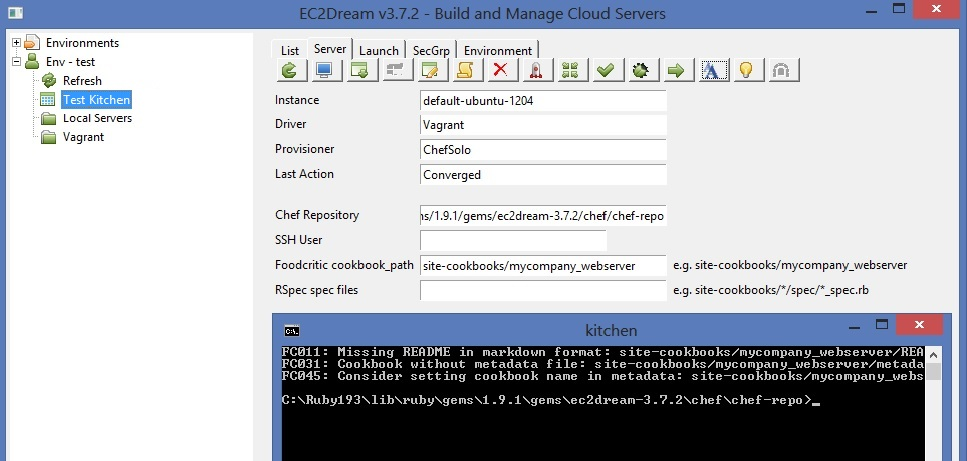

Testing with Test Kitchen
Test Kitchen is a test harness tool that can test a wide variety of config management tools on a wide variety of platforms using a variety of test tools. Here we will test chef scripts on Vagrant.Install Pre-Requisites
To use vagrant with Test Kitchen install:
Oracle Virtual Box
Vagrant
Create an EC2Dream Environment
In a command line run ec2dream and create a new "Servers" environment called say test.
Create an Instance
Click on "Test Kitchen" and a list of kitchen instances are displayed.
Select instance "default-ubuntu-1204" and the Server will display.

Click on

Eventually the instance will be created and you will have a running instance in vagrant
Click on
Converge and Verify instance
Run the chef cookbooks by clicking on the converge button
Run the integration tests by clicking on the
NOTE: Instance Create, Converge and Verify can be run in one step by pressing the test button
Click on to display the kitchen and instance logs

Destroy instance
Click onConfigure Test Kitchen
Click on the edit button to configure the kitchen.yaml fileFoodcritic - Code Style and lint checking
Foodcritic can be run by entering the cookbook directory in the foodcritic parameter and pressing the foodcritic button
NOTE: These run on your workstation and don't use test kitchen.
RSpec - unit tests
RSpec can be run by entering the rspec scripts in the rspec parameter and pressing theNOTE: These run on your workstation and don't use test kitchen.